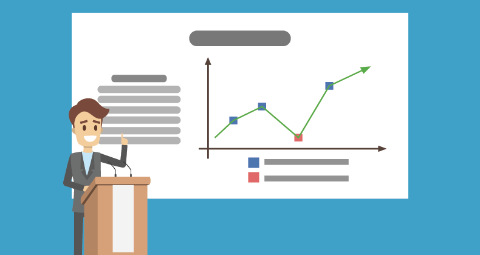
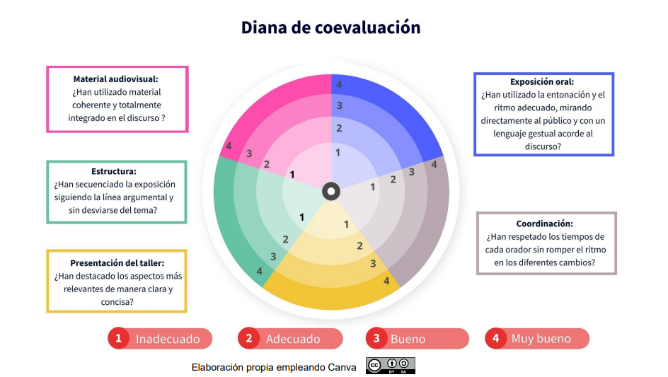

Presentación del proyecto
Después de tanto procesamiento de datos en la hoja de cálculo y debate cooperativo, llega el momento de la verdad: ¡Presentar los resultados de nuestra investigación estadística al resto de la clase!
Para dar respuesta definitiva al reto que nos planteamos al inicio ("¿Somos dueños de nuestro tiempo libre?"), cada grupo hará una exposición en clase (de máximo 10 minutos) sobre su estudio, que será evaluado tanto por el docente como por el resto de compañeros y compañeras.

¿Qué información debemos incluir?
Cada equipo tendrá que exponer su proyecto, apoyándose en su informe estadístico digital (Canva, Genially, PowerPoint, etc.), incluyendo obligatoriamente la siguiente información:
- Portada con el título de vuestra investigación.
- Personas que forman el equipo investigador.
- Justificación del proyecto: ¿Qué variables bidimensionales habéis elegido estudiar (X e Y) y por qué son relevantes para vuestro día a día (ej. horas de sueño, rendimiento académico, tiempo de uso del móvil...)?
- Organización de los datos: Tablas de frecuencias generadas a partir de la encuesta de la clase.
- Representación visual: Gráficos estadísticos generados con el software (diagramas de dispersión o nubes de puntos).
- Parámetros estadísticos: Cálculo y muestra de la covarianza, el coeficiente de correlación de Pearson (r) y la ecuación de vuestra recta de regresión.
- Predicciones y fiabilidad: Análisis del coeficiente de determinación (R²). ¿Es fiable vuestro modelo lineal para estimar comportamientos futuros?
- Conclusión analítica y espíritu crítico: ¿Existe una causalidad real directa entre vuestras variables o se trata solo de una correlación estadística? Justificad si habéis detectado posibles "variables ocultas".
- Bibliografía, webs y bases de datos donde poder profundizar (como el Instituto Nacional de Estadística).
Decisión final
Cada grupo presentará su proyecto y los demás grupos evaluarán la intervención siguiendo esta diana de coevaluación.
